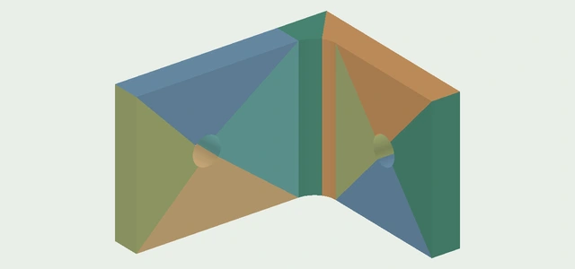
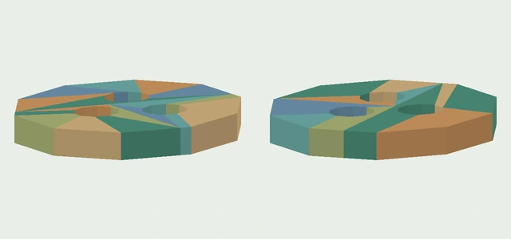
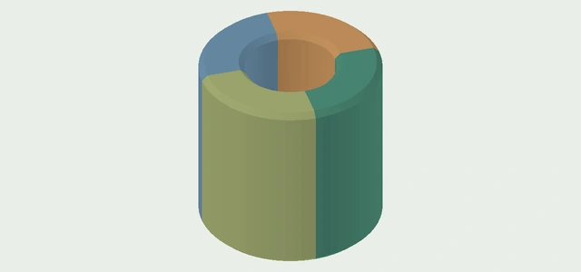
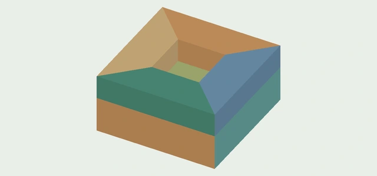

Choose a collection to explore the geometry and inspect its construction records.

Inspect 68 solids, switch between NURBS volumes and Bézier cells, and section the geometry.

Explore two partitions of the same sketch side by side with synchronized cameras.

Compare sharp, rounded and bevelled edges. Inspect the control nets and Jacobian checks.

Inspect intersections, unions and differences alongside their operands and validation records.